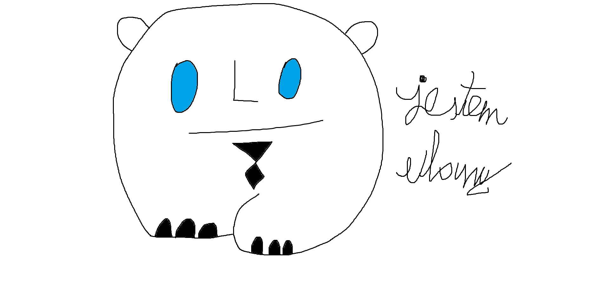

NFT.EP09.NET - a REALNFT.COM branch
Ulańce - Season 1

Ulaniec 1.0.exe
Ulaniec 2.0.exe
Ulaniec 3.0.exe
Ulaniec 4.0.exe
Ulaniec 5.0.exe

Ulaniec 6.0.exe
Ulaniec 7.0.exe
Ulaniec 8.0.exe
Ulaniec 9.0.exe
Ulaniec 10.0.exe

Ulaniec 11.0.exe

Ulaniec 12.0.exe
Ulaniec 13.0.exe
Ulaniec 14.0.exe
Ulaniec 15.0.exe
Ulaniec 16.0.exe
Ulaniec 17.0.exe
Ulaniec 18.0.exe
Ulańce - Season 2
Ulaniec 2.1.0.exe
Ulaniec 2.2.0.exe
Ulaniec 2.3.0.exe
Ulaniec 2.4.0.exe
Ulanica 2.5.0.exe
Ulańce - Season 3

Ulaniec 3.1.0.exe
Ulaniec 3.2.0.exe
Ulaniec 3.3.0.exe
Ulaniec 3.4.0.exe
Ulaniec 3.5.0.exe
Ulaniec 3.6.0.exe
Ulaniec 3.7.0.exe
Ulańce - Season 4
Ulaniec 4.0.0.exe
Ulaniec 4.1.0.exe

Ulaniec 4.2.0.exe
Ulaniec 4.3.0.exe
Ulaniec 4.4.0.exe
Ulaniec 4.5.0.exe
Ulaniec 4.6.0.exe